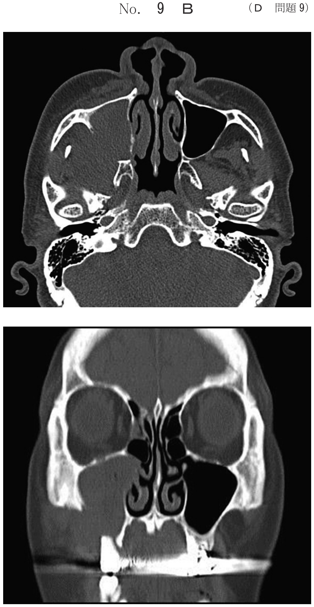

部分床義歯の構成
パーシャルデンチャーの構成要素
パーシャルデンチャーは、支台装置、連結装置、人工歯、義歯床、隣接面板から構成される。
構成要素と機能
| 構成要素 | 機能 |
|---|---|
| 支台装置 | 支持・把持・維持（クラスプ、アタッチメント、テレスコープクラウン） |
| 連結装置 | 義歯各部を連結（大連結子、小連結子） |
| 義歯床 | 人工歯を保持、咬合圧を顎堤に伝達、支持・把持 |
| 人工歯 | 咬合接触を担う |
| 隣接面板 | 支台歯の誘導面に対応、把持作用 |
レスト → 義歯床 → 連結装置 → 支台装置維持部
まず支持を確保（レスト）し、次に支持域（義歯床）、連結、最後に維持部を設定する。
歯の欠損による障害の分類
一次性障害
歯の欠損直後、短期間に生じる障害。
- 咀嚼障害（咀嚼能率の低下）
- 発音障害
- 審美障害（外観不良）
- 感覚障害
二次性障害
欠損を放置することで徐々に生じる形態的・機能的変化。
- 歯列の変化（残存歯の移動・傾斜）
- 対合歯の挺出
- 咬合の変化（早期接触、咬頭干渉）
- 食片圧入、隣接接触点の喪失
- 歯周組織の変化
三次性障害
二次性障害が進行して生じる全身的・機能的障害。
- 咀嚼筋痛、顎関節障害
- 顎関節雑音
- 開口障害
欠損の分類
Kennedy分類（欠損部位による分類）
| 分類 | 欠損様式 |
|---|---|
| Ⅰ級 | 両側性の遊離端欠損（後方） |
| Ⅱ級 | 片側性の遊離端欠損 |
| Ⅲ級 | 片側性の中間欠損 |
| Ⅳ級 | 正中線を越える前歯部欠損 |
Eichner分類（咬合支持域による分類）
上下顎臼歯部の咬合支持域（4箇所：左右小臼歯部・大臼歯部）の接触状態で分類。
| 分類 | 定義 |
|---|---|
| A群 | 4支持域すべてに対合歯との接触がある |
| B群 | 4支持域の一部に対合歯との接触がない |
| C群 | 対合歯との接触がまったくない |
- B1：3つの支持域に接触あり
- B2：2つの支持域に接触あり
- B3：1つの支持域に接触あり
- B4：支持域以外（前歯部）に接触あり
過去問
部分床義歯の製作設計に際し、義歯構造体の設定手順で正しいのはどれか。1つ選べ。
b 義歯床 → 連結装置 → 支台装置維持部 → レスト
c レスト → 義歯床 → 連結装置 → 支台装置維持部
d レスト → 連結装置 → 支台装置維持部 → 義歯床
e レスト → 支台装置維持部 → 連結装置 → 義歯床
【解説】設計手順はレスト→義歯床→連結装置→維持部。まず支持（レスト）を確保し、次に支持域（義歯床）、連結、最後に維持部を設定する。
歯列の部分欠損に伴う二次性障害はどれか。1つ選べ。
b 開口障害
c 咀嚼筋痛
d 発音障害
e 対合歯の挺出
【解説】対合歯の挺出は欠損放置による二次性障害。外観不良・発音障害は一次性障害、開口障害・咀嚼筋痛は三次性障害。
歯の喪失に伴う障害とその分類の組合せで適切なのはどれか。2つ選べ。
b 早期接触 ーーーーー 一次性障害
c 咬頭干渉 ーーーーー 二次性障害
d 咀嚼筋痛 ーーーーー 二次性障害
e 食片圧入 ーーーーー 三次性障害
【解説】審美不良は一次性障害（欠損直後）、咬頭干渉は二次性障害（欠損放置による咬合変化）。早期接触・食片圧入は二次性、咀嚼筋痛は三次性障害。
上顎は全歯残存、下顎は2歯残存でKennedyⅣ級の欠損様式である。上下顎とも第三大臼歯は存在しない。
Eichnerの分類はどれか。1つ選べ。
b B2
c B4
d C1
e C2
【解説】KennedyⅣ級は前歯部欠損。下顎2歯残存が臼歯部にあり、上顎全歯残存との間で2つの支持域に咬合接触がある→B2。
Eichnerの分類B4の欠損様式に対して、長期に補綴処置がなされない場合に生じる可能性があるのはどれか。すべて選べ。
b 咬合高径の低下
c 欠損部対合歯の挺出
d 前方滑走運動時の干渉
e 大臼歯部における早期接触
【解説】B4は臼歯部の咬合支持がなく前歯部のみ接触。放置すると下顎位の不安定、咬合高径低下、対合歯挺出、前方運動時の干渉が生じる。大臼歯部に歯がないため早期接触は起こらない。
下顎のKennedyⅠ級症例で支持作用と把持作用の両方を発揮するのはどれか。2つ選べ。
b 維持格子
c 小連結子
d 大連結子
e 隣接面板
【解説】義歯床は咬合圧を顎堤に伝達（支持）し、顎堤形態に適合（把持）。大連結子も剛性により支持・把持に寄与。維持格子は維持、小連結子は連結、隣接面板は把持のみ。
前歯残存の下顎遊離端欠損で臼歯人工歯のモールド選択の参考にするのはどれか。2つ選べ。
b 鼻翼幅線
c 歯槽頂線
d Camper平面
e レトロモラーパッド
【解説】臼歯人工歯のモールド（大きさ）選択には対合歯の大きさとレトロモラーパッドの幅を参考にする。鼻翼幅線は前歯部の参考。
70歳の男性。義歯の新製を希望して来院した。初診時の口腔内写真（別冊No.15A）と新製義歯の写真（別冊No.15B）とを別に示す。
丸印で示す部位で義歯の支持に有効なのはどれか。2つ選べ。


b イ
c ウ
d エ
e オ
【解説】義歯の支持に有効な部位は顎堤（義歯床による粘膜支持）とレスト（歯牙支持）。